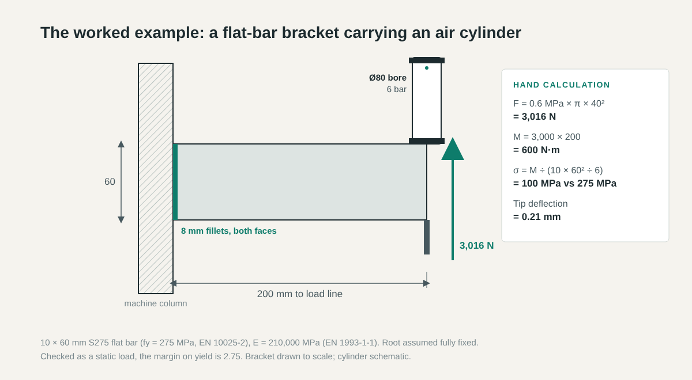
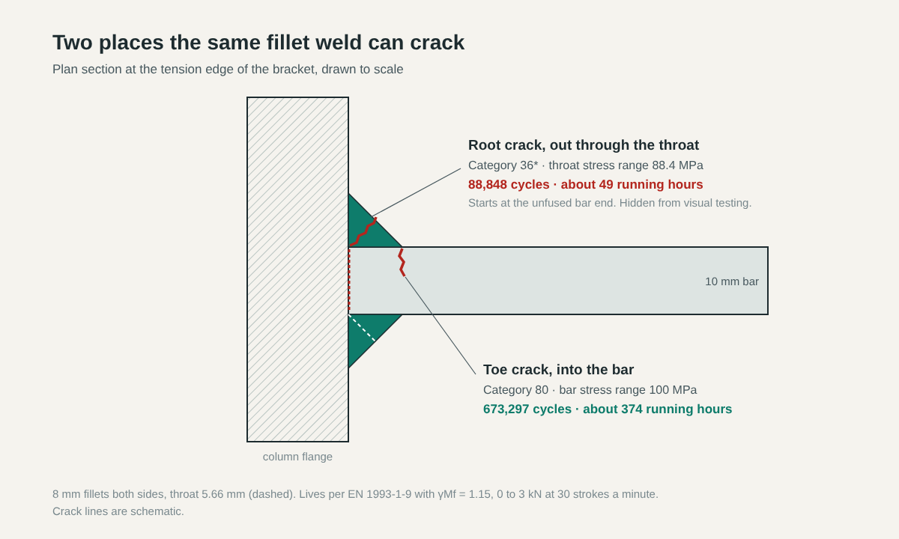
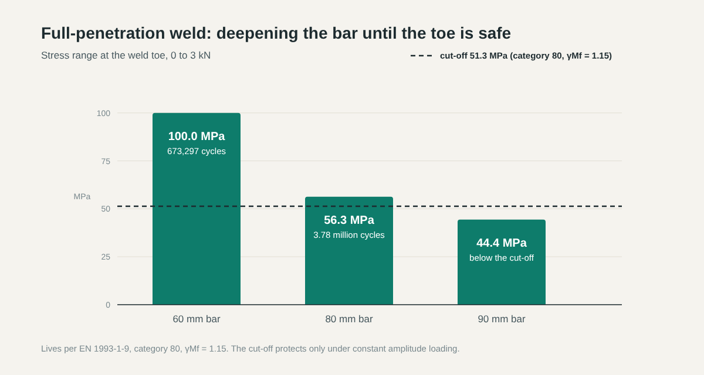

The load on the drawing said 3 kN. It came from an 80 mm bore air cylinder at 6 bar, which is 0.6 MPa acting on 5,027 mm² of piston, or 3,016 N. The bracket that takes the cylinder's reaction was checked against that figure as if it were a weight hanging off the end: bending stress 100 MPa against a yield of 275 MPa. Released.
The number was right. What nobody wrote next to it was that the cylinder fires on every cycle of the machine.
Closing that gap is most of what structural analysis before production is for. Manufacturers validate designs so that somebody checks the part against the way it is actually loaded, and that information is rarely in the CAD model. Below, the bracket is worked through from the hand calculation onwards.
Where the Load on the Drawing Came From
A cylinder's force is supply pressure times piston area, so on the extend stroke an 80 mm bore gives 3,016 N at 6 bar. On the return stroke the rod takes up part of the piston face and the force drops. For checking the bracket, use the theoretical extend force at the highest pressure the regulator can be set to, not the pressure on the pneumatic schematic. If the air main in the shop runs higher than the setting, someone will eventually turn the regulator up to make the machine faster.
The force figure says nothing about how often. A clamp cylinder on a weld fixture might close a handful of times a shift. A cylinder on a reject gate or a press feed can do 30 strokes a minute for two shifts a day, and the bracket it reacts against sees every one. So when a load turns up on a drawing, we ask two things before doing any arithmetic: where it came from, and how many times the part will see it.
The Check That Usually Gets Done
The bracket is 10 mm S275 flat bar, 60 mm deep and 200 mm long, fillet welded down both faces to a machine column, with the 3 kN at its tip. EN 10025-2 gives S275 a minimum yield strength of 275 MPa up to 16 mm thick, and EN 1993-1-1 gives E as 210,000 MPa.
| Quantity | Working | Result |
|---|---|---|
| Root bending moment M | 3,000 N × 200 mm | 600,000 N·mm |
| Section modulus Z | 10 × 60² ÷ 6 | 6,000 mm³ |
| Bending stress at the root | 600,000 ÷ 6,000 | 100 MPa |
| Second moment of area I | 10 × 60³ ÷ 12 | 180,000 mm⁴ |
| Tip deflection | 3,000 × 200³ ÷ (3 × 210,000 × 180,000) | 0.21 mm |
| Margin on yield | 275 ÷ 100 | 2.75 |

For a load that goes on once and stays there, that table is the whole answer. The bar has a margin of 2.75 on yield and the tip moves about a fifth of a millimetre. We would not put this part into FEA. It would cost more than the bracket and tell you what the table already says.
A Bracket Is Only As Stiff As What It Is Welded To
The cantilever formula assumes the column face cannot rotate. Weld the bracket to the 4 mm wall of a box section and the wall bows under the moment. Bolt it through an end plate and the plate lifts at the top bolts. Whatever rotation the root allows comes out at the tip multiplied by 200 mm.
At a joint rotational stiffness of 3*EI* ÷ *L*, the joint and the bar contribute equally to the tip deflection. For this bracket that is 3 × 210,000 × 180,000 ÷ 200 = 5.67 × 10⁸ N·mm/rad, or 567 kN·m/rad. Below that, the joint is moving more than the bar, and the real tip deflection is more than double the 0.21 mm in the table. On a guard mount, nobody will notice. On a bracket that locates a sensor or carries a linear guide, it is the only number that matters.
EN 1993-1-8 Section 6.3 has a component method for the rotational stiffness of standard steel joints. A flat bar welded to a thin tube wall isn't in it. That is a fair job for a finite element model, provided the model includes the tube. Fix the root face in the software and you get 0.21 mm back, which is the textbook's assumption again with a colour plot on top.
The Crack Starts Where Nobody Can See It
Now put the cylinder back. At 30 strokes a minute the bracket root sees its 3 kN come and go 1,800 times an hour.
Welded joints are assessed for fatigue on stress range, and the reason is the way the weld cools. Weld metal shrinks as it cools and leaves residual stress at or near yield in and around the joint, so a modest applied mean stress makes no real difference on top of it. EN 1993-1-9 only asks how far the stress swings. Here it swings from zero to 100 MPa in the bar.
The standard gives each welded detail a category, which is the stress range in MPa it survives for two million cycles, with a slope of 3 on the curve below five million cycles. Using the partial factor γMf = 1.15 from its Table 3.1, for a safe-life detail with low consequence of failure, the life is 2,000,000 × (category ÷ 1.15 ÷ stress range)³.
A fillet-welded joint like this one has two places to crack. The toe, where the weld face meets the bar, is category 80 in Table 8.5. The root is category 36*, assessed on the stress in the weld throat. It rates so much lower because a fillet weld never fuses the end of the bar to the face of the column. That unfused line between the two pieces of steel sits at the root of both welds like a crack that was there from the day the joint was made.
With 8 mm legs the throat is 0.707 × 8 = 5.66 mm. The two 60 mm welds have a section modulus of 2 × 5.66 × 60² ÷ 6 = 6,788 mm³, so the stress range in the throat is 600,000 ÷ 6,788 = 88.4 MPa.
| Where it cracks | Category | Stress range (MPa) | Life with γMf = 1.15 | Running hours at 30 strokes/min |
|---|---|---|---|---|
| Weld toe, into the bar | 80 | 100.0 | 673,297 cycles | 374 |
| Weld root, through the fillet throat | 36* | 88.4 | 88,848 cycles | 49 |

Forty-nine hours, or about three days on two shifts.
The root crack grows inside the joint, out through the throat towards the weld face. Visual testing to ISO 17637 looks at the surface of the weld, so a root crack passes inspection right up until it breaks through. By then most of the throat has gone.
Why a bigger fillet doesn't save it
The usual reaction is to call up a bigger weld. Take the legs to 10 mm, which is about as far as a fillet on 10 mm bar sensibly goes, and the throat stress range falls to 70.7 MPa. The life rises to 173,531 cycles. Ninety-six hours.
The category stays at 36*, because the unfused line at the root is still there at any leg length. A bigger fillet only lowers the stress on the same detail, and with life following the cube of stress range, 8 to 10 mm doesn't move it far enough.
What does fix it, and what it costs in the shop
Get rid of the root. A full-penetration butt weld fuses the bar to the column through its whole thickness, which leaves the toe, at category 80, as the only place to crack. Then deepen the bar until the toe is comfortable.
| Bar depth (mm), full-penetration weld | Stress range at toe (MPa) | Margin on yield | Toe life, category 80, γMf = 1.15 | Mass relative to 60 mm bar |
|---|---|---|---|---|
| 60 | 100.0 | 2.75 | 673,297 cycles | 1.00 |
| 80 | 56.3 | 4.89 | 3.78 million cycles | 1.33 |
| 90 | 44.4 | 6.19 | below the cut-off limit | 1.50 |

The constant amplitude fatigue limit for category 80 is 0.737 × 80 = 59.0 MPa, or 51.3 MPa with γMf applied. At 90 mm deep the toe sees 44.4 MPa, which is under it, so as long as every stroke is the same, the toe does not accumulate damage. That condition matters. If the cylinder cushioning is set badly and the stroke ends on a hard stop, the impact adds a peak on top of the cylinder force, the loading is no longer constant amplitude, and the standard wants a damage sum with no free pass from the cut-off.
The rest of the cost is in the shop. A full-penetration T-joint in 10 mm bar needs the end bevelled, usually from both sides, and either a back-gouge and a second-side run or a backing bar. It takes longer to fit up and longer to weld than two fillets. A visual check can't confirm the weld has actually penetrated, so where it matters it needs ultrasonic testing as well. On a cyclic bracket it matters. Our position is that a bracket with a static load gets fillet welded and the money saved, and a bracket that cycles every stroke gets the preparation and the UT, because the fillet version on this example fails in days.
Where the Hand Calculation Runs Out and FEA Starts
Everything so far was done on a calculator, because the bracket is a plain bar with both weld details in the tables. A lot of machine parts aren't like that. Put a gusset under the bracket, cut a lightening hole near the root, or wrap the fillet round the end of a plate, and there is no longer a single nominal stress to look up.
That is where FEA earns its fee. For welded details the tables don't cover, EN 1993-1-9 Annex B and the IIW recommendations use the hot-spot stress method. Surface stresses are read from the model at set distances ahead of the weld toe and extrapolated back to it, which captures the joint geometry while avoiding the singular peak at the toe. The same model can include the flexible tube wall from earlier, the bolt preload, plate buckling and several load cases acting together. Good FEA analysis services build the model around the question the hand calculation could not answer, and write down every load, support and assumption so someone else can check the result.
A Red Spot Is Not a Result
CAD draws the inside corner between a bracket and its mounting plate with zero radius unless somebody models one. In a linear elastic model, the stress at a sharp re-entrant corner is theoretically infinite. Refine the mesh and the peak goes up. Refine it again and it goes up again.
Before we trust a model of this bracket, we check that the reactions at the root add up to 3 kN and 600 N·m, and that the stress a short way out from the root agrees with the 100 MPa in the table. If either is off, nothing else in the plot means anything yet. Then we check that the stress being assessed stops changing as the mesh gets finer. A peak that keeps climbing gets dealt with by modelling the radius the part really has (a laser-cut corner has one, a formed bend has one) or by switching to hot-spot extrapolation at a weld. It never goes into a report as a number.
Before the Drawing Is Released
Write two things next to the bracket calculation: where the load comes from, and how many times the part will see it in its life. If it comes from a cylinder, a cam, a motor or anything else that repeats, check the welds for fatigue before anything else, and check the root as well as the toe. The same habit carries over to heat and flow, where engineering simulation services doing thermal or CFD work should be asking about the duty cycle before they build a mesh.